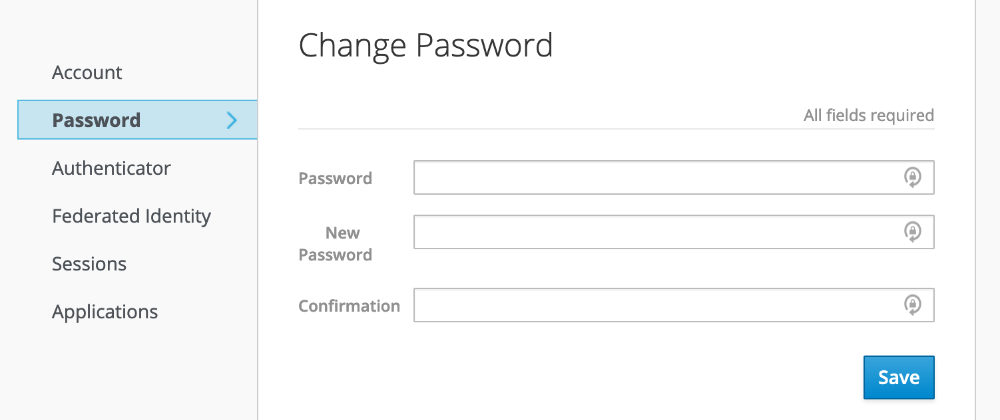
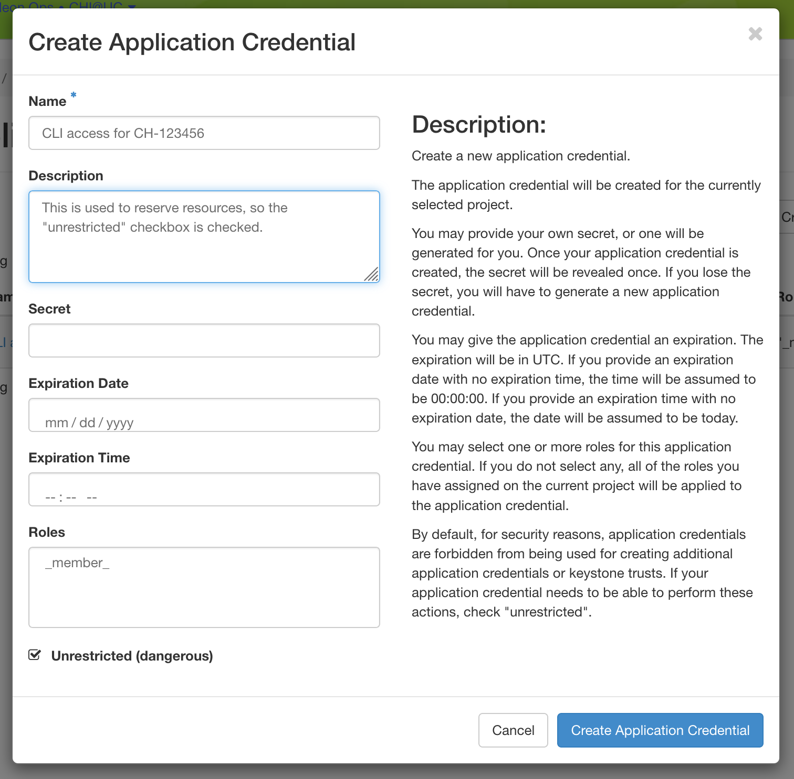
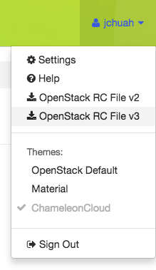

The Command Line Interface (CLI) provides a way to interact with Chameleon
resources using shell and scripting tools. Chameleon uses the OpenStack Client to provide CLI
functionality. This documentation section provides an overview on how to install
the client and configure your shell environment to access Chameleon features.
Attention
Some of the Chameleon features are only accessable via the CLI, such as
the Gnocchi metrics and the advanced networking features.
Note
Chameleon Cloud is primarily designed to support Unix-like environments.
Threfore, it is highly recommended using CLI in a Unix-like system. For
Windows 10 users, you may want to enable Windows Subsystem for Linux to get better
experience with the Chameleon CLI.
Install the CLI by typing pipinstallpython-openstackclient in the
terminal.
Verify that it has installed correctly by typing openstack. You will
enter the Openstack Client in interactive mode and your prompt should change
to (openstack).
Exit the client by typing exit.
There are some clients with new features or bugfixes not yet in the upstream
release branches, notably the Blazar CLI client. If you want to make
reservations via the CLI, you should install that here:
When using the CLI, you have to provide some credentials so the system trusts
that the operations are really being executed by your user account. There are
two ways of doing this.
You can set a CLI password via the Chameleon Authentication Portal. The
password you associate with your account can not be used to log in to the GUI or
Jupyter interfaces and can only be used to authenticate a command-line client.

Setting a password in the Chameleon Authentication Portal
The benefit of this method is that this password will work on any Chameleon
site.
Note
You should set a strong password for your CLI password, and it should not be
a password you use elsewhere. Otherwise, your account risks being compromised
by an attacker who has possibly obtained your password from another breached
service. We highly recommend using a password manager e.g., BitWarden, LastPass
<https://www.lastpass.com/password-manager>, or 1Password to assist.
You can also generate application credentials, which act as dedicated one-off
passwords that are authorized with the same permissions as your user account,
within a single project. If you work on multiple projects simultaneously, you
will need to generate one application credential for each project.
To create an application credential, navigate to the “Identity” dashboard in the
Graphical User Interface (GUI), and go to the “Application Credentials” panel. Create a new
application credential and name it something meaningful (such as “CLI access for
project CH-XXX”). You will also need to check the “unrestricted” checkbox in
order to use the CLI to make leases in Blazar. If you do not need to make
reservations via the CLI, you can leave the box unchecked, as it is the safer
option.

Once the system generates the credential, you will be given the option to
download an RC file that configures the CLI to use the
application credential for authentication. You will only see the secret
credentials once, so make sure to save the RC file or the secret somewhere, as
if it’s lost, you will have to delete the credential and create a new one.
You must use the OpenStack RC Scripts to configure the environment variables
for accessing Chameleon features. You can downloaded the script from the
Chameleon GUI at the API Access.
Hint
If you use the Chameleon supported (CC) images, you’ll find an openrc
file with a service token in the home directory for the cc user. The file
will be auto-sourced when you login, so you can use the
openstack and the swift CLI
directly, as well as the
cc-snapshot and the
cc-cloudfuse tools.
Download OpenStack RC Script using User Menu by clicking on
Openstack RC File v3.

The OpenStack RC File v3 link in the User Dropdown
Run the following command in the terminal:
source<path/to/openstack_rc_file>
Note
The command will not work for Windows users. Skip this step and the
next step if you are using Windows system.
Enter your password when prompted.
For macOS/Linux users, your current terminal session has been configured to
access your project. Now type openstack in your terminal session.
For Windows users, you have to provide the environment variables in the
OpenStack RC script as openstack command parameters. Run the following
command in your Windows prompt:
Replace values of the parameters by reading from the OpenStack RC script.
Another way to configure the OpenStack client for Windows users is to
add/edit environment variables manually via System Properties window. Then,
click on Environment Variables… button and manually add/edit the
environment variables in OpenStack RC Script to Environment Variable
window.
For macOS/Linux users, every time when open a new terminal, you have to
run the source command to access the OpenStack client.
Error
If you get authentication error, check if you input your password
correctly.
Type projectlist at the (openstack) prompt. You should see a list of
the projects you belong to.
Error
If you get permission error at this step, please check that:
the terminal session has been configured correctly with the environment
variables
the OpenStack RC script you source is v3
the OpenStack client version is the latest. To check the OpenStack
client version, use openstack--version command. Some older versions
may cause errors.
Error
If you get the Missingvalue error when using a command, it is likely
that your terminal session has not been configured correctly and
completely with the environment variables. The error may be fixed by
re-running the source command over the OpenStack RC Script or using
the command line switches.
You can use the CLI in either Interactive Mode or Shell Mode. In either mode,
the OpenStack client has to be configured by using the OpenStack RC Script or
by providing the command line switches. For more information about the usage of
the OpenStack client, run openstack--help.
The Interactive Mode allows you to use the openstack commands through an
interactive prompt. To start the Interactive Mode, type openstack in the
configured terminal. Once entering the Interactive Mode, you will see a
(openstack) prompt. Type the command you would like to run at the prompt. To
find out the commands, type help.
Each CLI command can be used in your terminal exactly the same way that it
appears in the Interactive Mode, simply by preceding the command with
openstack. For example, the command imagelist in the Interactive Mode
is equivalent to the command openstackimagelist in the Shell Mode.